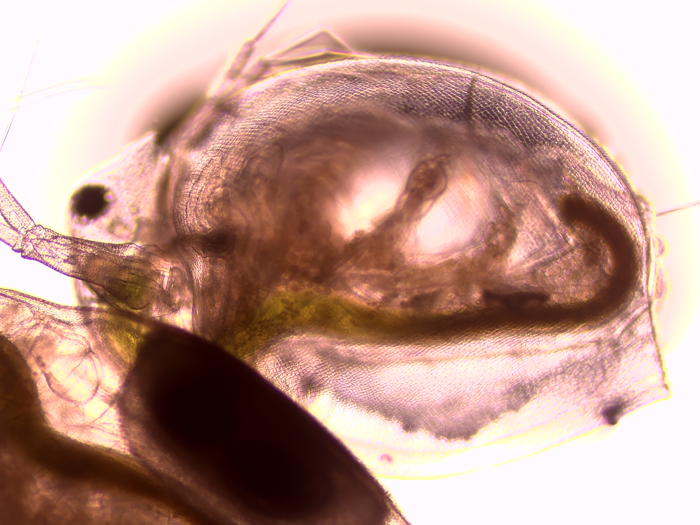

Je suis un écophysiologiste et écotoxicologue spécialisé dans les compartiments marins et aquatiques. Pour résumer mon profil, je suis une personne passionnée par la recherche scientifique, et plus spécifiquement par l’impact des polluants introduits par l’Homme dans ces écosystèmes. Mon ambition scientifique s'inscrit dans une démarche rigoureuse visant à approfondir nos connaissances sur ces problématiques environnementales complexes, et c’est dans cette optique que je souhaite consacrer mon travail de thèse à ces thématiques.
Les domaines d’intérêt permettant de répondre aux problématiques qui me sont posées incluent les mesures biochimiques, les analyses omiques, génétiques et physiologiques, ainsi que le traitement et l’analyse approfondie des données produites. J’ai également des compétences robustes en modélisation, en science des données et en langage de programmation, des outils essentiels pour développer une approche intégrative et prédictive des impacts des polluants sur les organismes et les écosystèmes.
Au-delà de l’aspect scientifique, la compréhension du fonctionnement du vivant représente pour moi une stimulation intellectuelle majeure ainsi qu’un engagement envers la transmission de connaissances et de valeurs fondamentales. En me lançant dans une thèse, je souhaite non seulement contribuer activement à la recherche sur l’impact des polluants dans les milieux aquatiques et marins, mais aussi participer à l’élaboration de solutions innovantes et durables pour mieux préserver ces écosystèmes.
De l’atome au compartiment écologique, en passant par la population, mon approche ainsi que mon profil se veut systémique et transdisciplinaire, en accord avec les enjeux scientifiques et environnementaux actuels.
J'ai été pendant un an ingénieur d'étude dans le laboratoire privé Plastic at Sea, ce qui m'a permis d'acquérir de nouvelles compétences, mais surtout de gagner en maturité, en autonomie et en responsabilité, étant responsable d'une équipe de trois techniciens ainsi que des stagiaires présents sur le site du laboratoire. Mon rôle était donc la gestion des équipes et du laboratoire, mais aussi la planification, la gestion et le traitement des expérimentations des différents pôles de production et de recherche et développement (toxicité aiguë, toxicité chronique, biodégradation et colonisation ainsi que quantification) liés, bien sûr, à la problématique de la pollution plastique.
Après cette année très enrichissante professionnellement et personnellement, mon envie de réaliser une thèse est encore plus intense et réfléchie après cette immersion dans le monde du travail. De ce fait, j'ai toujours été passionné par les sciences des données et, surtout, par les outils qu'elles permettent d'utiliser pour répondre à des questions d'envergure environnementale.
C'est pour cela qu'à partir du 11 février 2025, je serai en bootcamp pendant quatre mois pour me former au métier de "data scientist". Cette envie de formation aux métiers de la "data" est, elle aussi, très réfléchie (cela fait trois ans que j'essaye de me la faire financer), et je considère cette formation comme une nouvelle boîte à outils me permettant d'approcher les problématiques en écologie/biologie sous un nouvel angle.
Si mon profil vous interesse je vous invite à me contacter (ici).
Plastic at sea : Dr Isabelle Calves
IFREMER : Dr Cristian Monaco
CNRS/Sorbonne : Dr Leila Chapron
Formation de Master (Biodiversité, Ecologie et Evolution parcours Ecophysiologie et Ecotoxicologie coloration marine à Sorbonne Université : Dr David Siaussat
Formation de licence Sicence de la vie Università di Corsica : Dr Sonia Ternengo